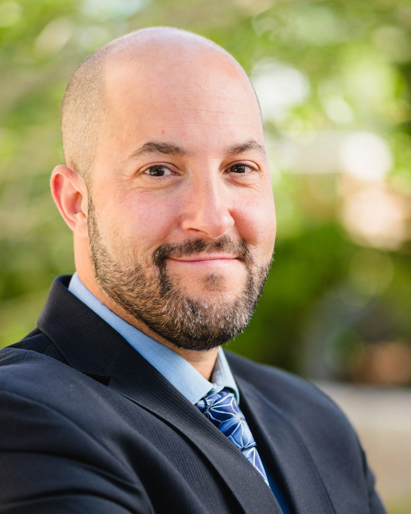

UC San Diego, La Jolla, La Jolla, USA

A foundational question in the science of consciousness concerns whether transient alterations in self-referential processing can produce durable transformations of the conscious mind. Across diverse contemplative traditions, mystics and meditators have long maintained that momentary experiences of nondual awareness, including ego dissolution and unity consciousness, do not merely pass without consequence but catalyze lasting reorganizations of awareness. In this view, the episodic attenuation of habitual self-referential processing seeds an enduring shift in the character of consciousness itself towards the trait of mindfulness: a greater propensity to remain present-centered, nonreactive, and accepting of experience as it unfolds. This ancient claim is now finding support in contemporary neuroscience, which implicates default mode network suppression, relaxed predictive coding, and the loosening of rigid self-models as candidate mechanisms through which both psychedelics and deep meditative states dissolve ordinary ego boundaries. What remains empirically underdetermined is whether these acute self-transcendent states actually drive the development of trait mindfulness as a stable dispositional orientation, or whether the two phenomena merely co-occur. We present convergent evidence from three independent randomized controlled trials (RCT) bearing directly on this question. In the first RCT (N=250), patients with chronic pain and opioid misuse receiving Mindfulness-Oriented Recovery Enhancement (MORE) showed that increases in nondual awareness experiences during mindfulness training sessions significantly mediated long-term increases in trait mindfulness over a 9-month follow-up. In the second RCT (N=68), patients with opioid use disorder receiving MORE combined with 0.5-1.0 mg/kg of intramuscular ketamine showed that ketamine-induced increases nondual awareness experiences significantly mediated the effect of the combined intervention on metacognitive processes central to mindful awareness. In the third RCT (N=25), participants receiving 25 mg psilocybin combined with Mindfulness-Based Stress Reduction (MBSR) for depression showed that increases in mystical-type experience, indexed by the Mystical Experience Questionnaire, significantly mediated post-treatment increases in trait mindfulness. Across all three trials, the acute attenuation of ordinary self-referential boundaries, whether induced through intensive contemplative practice, a serotonergic psychedelic (psilocybin), or an NMDA receptor antagonist (ketamine), predicted the degree to which participants developed a more enduring mindful orientation toward experience. These findings offer empirical grounding for a state-to-trait model of contemplative development, in which episodic ego dissolution functions not as an end in itself but as a reorganizing force that reshapes the default mode of consciousness towards being mindful in everyday life. That convergent results emerge across three mechanistically distinct induction methods, meditation, psilocybin, and ketamine, strengthens the inference that self-transcendence, rather than any modality-specific effect, is the active ingredient driving trait-level transformation. Implications for the neuroscience of self and awareness, the mechanisms of psychedelic-assisted therapy, and the optimization of mindfulness-based interventions will be discussed.
Eric Garland, PhD is Endowed Professor in Health Sciences at the T. Denny Sanford Institute for Empathy and Compassion, Professor in the Department of Psychiatry at University of California San Diego (UCSD), Director of UCSD ONEMIND (Optimized Neuroscience-Enhanced Mindfulness Intervention Design), and the Founder of MORE Science Institute. Dr. Garland is the developer of Mindfulness-Oriented Recovery Enhancement (MORE), an evidence-based, neuroscience-informed therapy for addiction, emotional distress, and chronic pain that has been hailed as one of the greatest breakthroughs in behavioral treatment in the past 30 years. He has over 290 scientific publications and has received more than $95 million in research grants from federal agencies including the National Institutes of Health (NIH) and the Department of Defense (DOD) to develop and test MORE and related therapies for addiction and chronic pain. In 2019, he was appointed by NIH Director Dr. Francis Collins to the NIH HEAL Multi-Disciplinary Working Group comprised of national experts on pain and addiction research to help guide the nation’s $2+ billion HEAL initiative to use science to halt the opioid crisis. Dr. Garland is also a licensed psychotherapist and Distinguished Fellow of the National Academies of Practice, with more than 20 years of clinical experience. In multiple bibliometric analyses of mindfulness research published over the past 55 years, Dr. Garland was found to be the most prolific author of mindfulness research in the world.